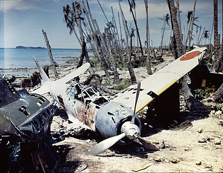
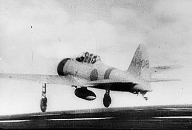
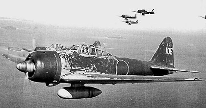
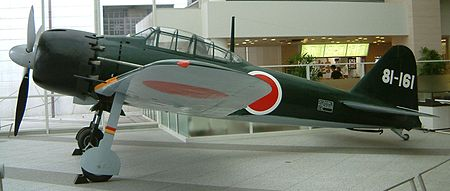
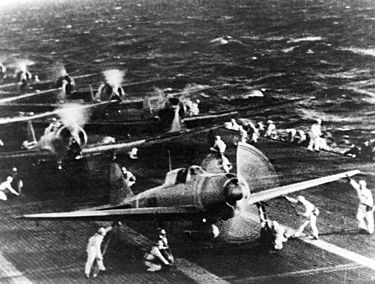
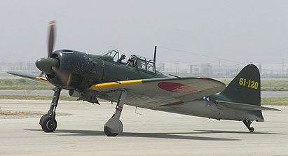
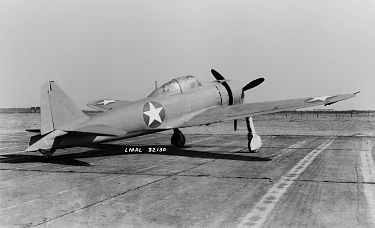
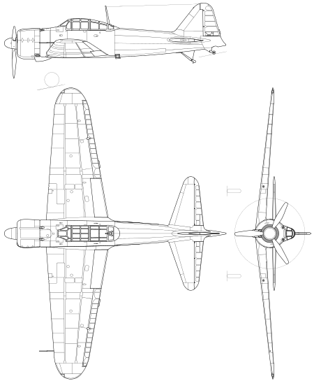

Mitsubishi A6M Zero («A» — истребитель; «6» — модель; «M» — Mitsubishi) — японский лёгкий палубный истребитель времён Второй мировой войны. Выпускался с 1940 по 1945 год, всего построено 10 939 единиц. A6M имел техническое превосходство над самолётами союзников до начала 1942 года, когда американские соединения начали вооружаться «Лайтнингами», которые могли диктовать условия схватки, используя своё преимущество в лётных характеристиках на больших высотах.
В 1943 году союзные истребители превзошли A6M по огневой мощи, бронированию и скорости, а также сократили отставание по манёвренности. В 1944 году A6M окончательно устарел, но продолжал производиться. В последние месяцы войны использовался для атак камикадзе. Вооружение состояло из двух 20 миллиметровых пушек под крыльями и двух пулемётов.
Название «Морской палубный истребитель Тип 0» (яп.Рэй-сики кандзё: сэнто:ки)», «сэн» от слова «сэнтоки» — «истребитель»); кодовое имя, данное союзниками, — «Зик» (Zeke), сокращение от Иезекииль (Ezekiel). Пилоты же называли A6M просто «Зеро» (с англ. — «Ноль»). Возможно, самый известный самолёт на тихоокеанском театре военных действий.
Истребитель Mitsubishi A5M только поступил на вооружение частей в начале 1937 года, как японский флот начал искать ему возможную замену. Спецификация на новый палубный истребитель была отправлена в Nakajima и Mitsubishi в мае. Обе фирмы начали предварительные работы по разработке в ожидании окончательных спецификаций.
Японские 20 мм авиапушки Тип 99-1 (вверху) и Тип 99-2 (внизу), выпускавшиеся по лицензии компании «Эрликон».
В октябре, основываясь на опыте, полученном во время применения A5M в Китае, флот выдвинул следующие требования: скорость 500 км/ч на высоте 4000 метров, и набор высоты 3000 метров за 3,5 минуты. Продолжительность полёта с подвесными баками должна составлять от двух часов в нормальном режиме до 6-8 часов в экономичном. Вооружение должно состоять из двух 20-мм пушек, двух 7,7-мм пулемётов и двух 60 килограммовых бомб. На все самолёты должен был устанавливаться полный набор радиооборудования, включая радиопеленгатор. Манёвренность должна остаться, как минимум, на уровне A5M, при размахе крыльев меньше 12 метров, для возможности базирования на авианосце.
Инженеры Nakajima сочли реализацию этих требований невозможной и в январе 1938 года вышли из конкурса. Дзиро Хорикоси, главный инженер Mitsubishi, для выполнения требований использовал все доступные методы снижения массы самолёта, в том числе использование секретного в то время высокопрочного алюминиевого сплава の英訳である системы Al-Zn-Mg-Cu (в английском переводе «супер-дюралюминия»), разработанного компанией Sumitomo Metal Industries в 1936 году.
Низкорасположенное свободнонесущее крыло, убираемые шасси с широкой колеёй, закрытый каплевидный фонарь кабины пилота с хорошим обзором делали «Зеро» самым технически оснащённым самолётом в мире.
В сравнении с западными самолётами «Зеро» не имел бронированной спинки кресла пилота и протектированных топливных баков, что снижало его боевую живучесть.
Силовой набор самолётов (по другим данным силовой каркас крыла) выполнялся из алюминий-цинк-магниевого сплава, который был легче и прочнее дюралюминия. Низкая нагрузка на крыло давала скорость сваливания около 110 км/ч — способность к крутым разворотам, недоступным союзным самолётам того времени. За счёт отклонения триммеров элеронов в противоположную сторону уменьшались усилия на ручке управления, но это снижало скорость крена на больших скоростях — на 260 км/ч она составляла 56 градусов в секунду. На скоростях около 500 км/ч скорость крена падала до нуля из-за гибкости крыла.
Американские военные получили возможность детально изучить «Зеро» после восстановления практически неповреждённого самолёта приземлившегося на Аляске в июне 1942 года. Данный самолёт известен как Акутанский Zero (англ. Akutan Zero). Японский пилот слишком далеко улетел от базы и, надеясь совершить экстренную посадку на территории США, перевернулся и погиб.
«Зеро» взлетает с палубы авианосца «Акаги» для атаки Пёрл-Харбора
Основная статья: Боевое применение Mitsubishi A6M Zero
Дебют «Зеро» состоялся в августе 1940 года в Китае. Из-за недостаточного радиуса действия устаревающие A5M не могли сопровождать японские бомбардировщики, и те несли большие потери от китайских истребителей. Всё изменилось с прибытием «Зеро». Во время первых операций по сопровождению бомбардировщиков ни один истребитель не поднялся в воздух на перехват, так как китайцы узнали о прибытии «Зеро» и рассредоточили свои самолёты. Всего предсерийные «Зеро» уничтожили в Китае 266 вражеских самолётов.
Во время нападения на Пёрл-Харбор в строю находилось 420 «Зеро». Американцы часто обнаруживали их гораздо дальше от авианосцев, чем предполагали, из-за большой дальности полета — 2600 км. Также «Зеро» превосходили союзные истребители по многим другим параметрам и быстро завоевали хорошую репутацию. Однако специальная тактика и новые истребители, разработанные союзниками, не позволила «Зеро» добиться полного превосходства в воздухе.
Японский ас Сабуро Сакаи вспоминал:
« Я был в полной уверенности в своей способности уничтожить «Грумман» и решил сбить вражеский истребитель используя только 7,7-мм пулеметы. Я повернул выключатель 20-мм пушек в положение «выкл» и приблизился. По какой-то непонятной причине, даже после того как я выпустил пятьсот или шестьсот пуль прямо в «Грумман», самолёт не падал и продолжал полёт. Я подумал что это очень странно — такого никогда не случалось ранее. Я стал сокращать расстояние между самолётами до тех пор пока, казалось, мог протянуть руку и потрогать «Грумман». К моему удивлению, руль направления и хвост превратились в лоскуты и выглядели как старый дырявый кусок тряпки. Не удивительно что с самолётом в таком состоянии пилот не мог продолжать бой. «Зеро» получивший так много пуль превратился бы в огненный шар. »
Повреждёный Mitsubishi A6M3 Zero на аэродроме Munda Airfield, Соломоновы острова, 1943 год.
Отсутствие протектированных топливных баков и какого-либо бронирования в сочетании с нежеланием пилотов, вопреки приказу, надевать парашюты[4] приводило к большим потерям опытных кадров. Ещё сильнее усугублял ситуацию более продолжительный период обучения японского лётчика по сравнению с союзниками.
Так как ввязываться в манёвренный бой с «Зеро» было смертельно опасно, то для борьбы с ним американцы использовали тактику «ударил-убежал» и «узор Тэча» названную в честь изобретателя — Джона «Джимми» Тэча. Эта тактика требует минимум два самолёта: ведущего и ведомого, летящих на расстоянии около 60 метров. Когда «Зеро» садится на хвост одному из истребителей, то они начинают поворачивать навстречу друг к другу. Если «Зеро» продолжает преследовать свою цель, то попадает в прицел другому истребителю. Использование этой тактики дало значительный результат в сражении в Коралловом море и при Мидуэе, а также помогло поправить положение американских пилотов до поступления на вооружение новых типов самолётов.
Когда Grumman F6F Hellcat, Vought F4U Corsair и Lockheed P-38 Lightning появились в небе над Тихим океаном, «Зеро» со своим маломощным двигателем потерял преимущество в воздухе. Соотношение потерь возросло с 1:1 до более чем десяти сбитых японских самолётов на один американский. Такому успеху американцев также способствовало всё большее количество неопытных японских лётчиков и снижение экономического потенциала Японии.
18 августа 1945 года во Владивостоке произошёл единственный за всю Вторую мировую войну бой, когда японский лётчик-камикадзе на «Зеро» пытался атаковать порт, но был сбит из автоматического оружия.[источник не указан 251 день]
A6M1
Первый прототип A6M1 был закончен в марте 1939 года. Он оснащался двигателем Mitsubishi Zuisei 13 мощностью 780 л. с. (580 кВт) и двухлопастным воздушным винтом с изменяемым в полете шагом. Впервые поднялся в воздух 1 апреля 1939 года и быстро прошёл все испытания. В сентябре он был передан флоту под обозначением «Палубный истребитель A6M1 тип 0» лишь с одним значительным замечанием — заменить воздушный винт на трехлопастной, чтобы избавиться от излишней вибрации.
A6M2 модель 11
Во время тестирования флотом первых двух прототипов поступило предложение оснастить третий прототип двигателем Nakajima Sakae 12 мощностью 940 л. с. (700 кВт). Mitsubishi имела свой собственный двигатель этого класса — Kinsei, поэтому с неохотой пошла на это. В январе 1940 года первый A6M2 с двигателем Sakae 12 поднялся в воздух. Дополнительная мощность двигателя значительно улучшила характеристики самолёта по сравнению с первоначальными требованиями.
Впервые A6M2 начали совершать боевые вылеты в августе 1940 года над провинцией Чунцин. Советские истребители И-16 и И-153, которые были серьёзной проблемой для A5M, для «Зеро» не представляли угрозы. Так, в одной схватке, 13 «Зеро» внезапно атаковав большую группу китайских И-15 и И-16, за полчаса, уничтожили 27 из них, без потерь для себя[5]. После таких сообщений флот приказал запустить самолёт в серийное производство.
Отчёты о характеристиках «Зеро», поступавшие в США, не воспринимались всерьёз военным командованием, которое не верило в способность Японии построить такой самолёт[6].
Nakajima A6M2-N «Rufe»
В начале 1941 года началась разработка поплавкового самолёта на основе модели 11. Инженеры Nakajima убрали стойки шасси, установили большой подфюзеляжный поплавок с топливным баком внутри, на лонжероне закрепили два поддерживающих поплавка, увеличили площадь руля и добавили небольшой киль под фюзеляжем. 8 декабря 1941 года прототип совершил первый полёт. Принят на вооружение в июле 1942 года под обозначением «морской поплавковый истребитель тип 2 модель 11».
A6M2 модель 21
В ноябре 1940 года была представлена модификация со складывающимися на 500 мм законцовками крыла, что позволяло размещаться на авианосцах. Ранее это было невозможно, так как палубные подъёмники авианосцев японского флота не были приспособлены для самолётов с длиной крыла более 11 метров. 740 самолётов этой модификации были построены Mitsubishi и 800 Nakajima.
Также эта модель послужила основой для двухместного тренировочного самолёта A6M2-K, 508 единиц которого построили Hitachi и 21-й арсенал морской авиации в Сасебо.
A6M3 модель 32
В конце 1941 года Nakajima представила двигатель Sakae 21 мощностью 1130 л. с. (840 кВт), оснащённый двухступенчатым нагнетателем, увеличивающим производительность на больших высотах. Из-за нагнетателя новый двигатель был несколько тяжелее и длиннее, что привело к смещению центра тяжести слишком далеко вперед. Было принято решение укоротить на 200 мм крепления двигателя к мотораме, сдвигая его таким образом к кокпиту. Это повлекло уменьшение ёмкости главного топливного бака, расположенного прямо за двигателем, с 518 до 470 литров.
Другим важным изменением было удаление складывающихся законцовок крыла. Это дало гораздо больший эффект, чем ожидалось изначально. Меньшая площадь крыла увеличила скорость крена, а уменьшившееся лобовое сопротивление позволяло пикировать на скорости до 670 км/ч. С другой стороны, уменьшились манёвренность и дальность полёта, что очень не нравилось пилотам и Штабу морской авиации. Меньший радиус действия внёс серьёзные ограничения во время кампании у Соломоновых островов в 1942 году.
Также были увеличены магазины крыльевых 20-мм пушек, теперь они могли вмещать до 100 снарядов (ранее 60). Магазины, выполненные в виде барабанов, стали выступать за габариты крыла и были закрыты обтекателями.
Модель 32 начала производиться в апреле 1942 года. Всего построено 343 самолёта. В первое время военные США зарезервировали кодовое имя «Hamp» для этой модели, прежде чем осознали, что это всего лишь модификация «Зеро».
A6M3 модель 22
Из-за потери части авианосцев в битве при острове Мидуэй самолётам приходилось действовать с сухопутных баз, летая на большие расстояния. Чтобы компенсировать уменьшенный радиус действия модели 32, вновь стали использоваться складывающиеся законцовки крыла. Также стали устанавливать два дополнительных крыльевых топливных бака по 45 л. Таким образом удалось достичь максимальной дальности полёта среди всех моделей «Зеро».
На некоторые самолёты (обозначались «модель 22а») ставились усовершенствованные пушки Тип 99 модель 2 модификация 3 с удлиненным стволом и увеличенной скорострельностью. Ещё несколько прототипов, обозначавшихся «модель 22б», вооружались 30-мм пушкой Тип2, но в серию не пошли из-за слабости конструкции крыла, не выдерживающей отдачу 30-мм пушек.
Всего с декабря 1942 года было произведено 560 самолётов этой модели.
A6M4
Два A6M2, оснащенные экспериментальной моделью двигателя Sakae с газотурбинным нагнетателем для использования на больших высотах, получили обозначение A6M4. В 1943 году за разработку модификации и тестирование этих двух прототипов взялся 1-й технический арсенал морской авиации в Йокосуке. Недостаток необходимых сплавов, используемых в производстве газотурбинного нагнетателя, сильно сказался на разработке, и она была свёрнута. Данные, полученные при разработке A6M4, в дальнейшем использовались при производстве более технологичного A6M5 и позволили ускорить его разработку, ведущуюся в то время Mitsubishi.
A6M5 модель 52
A6M5 — модификация A6M3, на который стали устанавливать крыло меньшего размаха — 11 метров (площадь 21,3 м²) с усиленной обшивкой, благодаря чему увеличилась скорость крена и достигалась скорость 657 км/ч в пикировании. Также была переработана система выхлопа — каждая пара цилиндров получила по выхлопному патрубку вместо общего коллектора выхлопных газов — это дало несколько дополнительных км/ч к скорости. Чтобы раскалённые выхлопные газы не прожигали обшивку в районе патрубков, её усилили стальным листом. Скорость самолёта возросла до 565 км/ч на 6000 метрах, став, таким образом, самой быстрой модификацией «Зеро». Всего было построен 1701 самолёт.
Варианты
- A6M5a «Kou» — устанавливались пушки Тип 99-II Мк 4 с ленточным питанием по 125 снарядов.
- A6M5b «Otsu» — первая модель, получившая 50-мм лобовое бронестекло. Фюзеляжные баки оснащались системой пожаротушения. Один 7,7-мм пулемёт заменили на 13,2-мм пулемёт Тип 3.
- A6M5c «Hei» — оставшийся 7,7-мм пулемёт демонтировали. В крыле рядом с 20-мм пушками смонтировали два дополнительных 13,2 пулемёта. Пилот получил защиту в виде бронеспинки и бронезаголовника. За кабиной пилота смонтировали дополнительный протектированный бензобак на 140 литров.
- A6M5d-S — ночной истребитель, вооружённый одной 20-мм пушкой, установленной наклонно в задней части фюзеляжа (аналог немецкой «неправильной музыки»).
- A6M6c
A6M6
Идентичен A6M5c, но оснащался двигателем Nakajima Sakae 31a с системой впрыска водно-метаноловой смеси и протектированными крыльевыми баками.
A6M7
Идентичен A6M6. Двигатель Nakajima Sakae 31b, с двухступенчатым нагнетателем и без системы впрыска водно-метаноловой смеси. Использовался для атак камикадзе.
A6M8
Идентичен A6M6. Оснащался двигателями Mitsubishi Kinsei 62. Построено два прототипа.
|  |
|  |
|  |
|  |
|  |
|  |
|  |
|  |